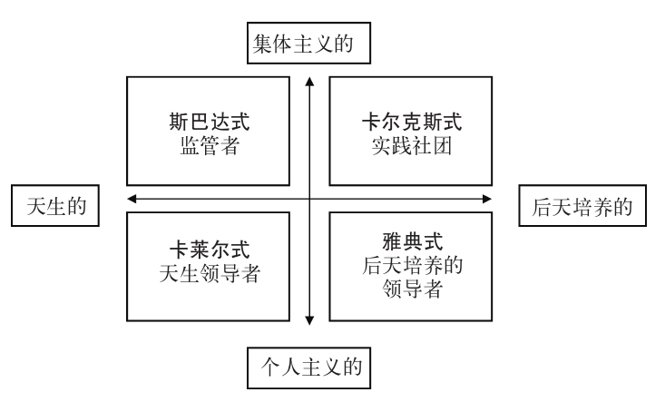
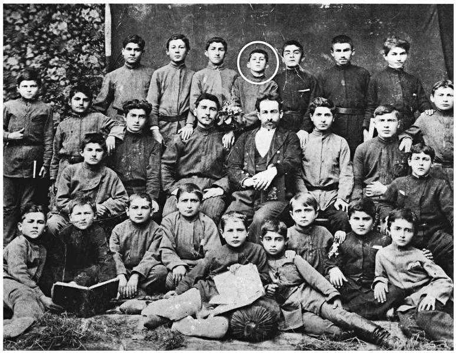
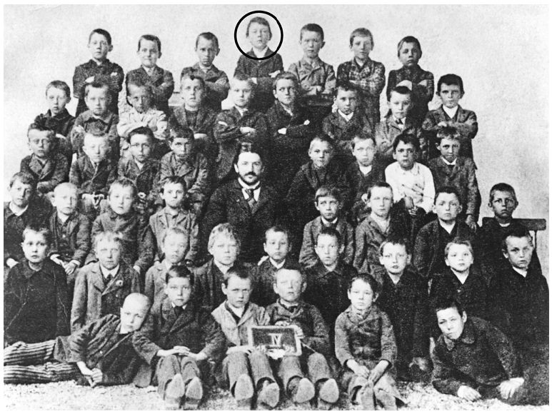
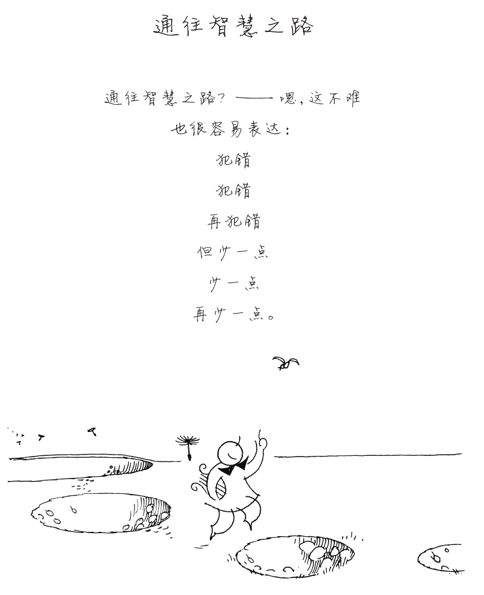

“领导者是天生的还是后天培养的？”这或许是我在教学生涯中被问得最多的一个问题了。通常我都会以不同的措辞回答说“两者兼有”：我们对此实在所知不多，无法做出任何非此即彼的断言（不过那也未能阻止人们继续提出同样的问题）。本章，我想提出一个四重分类法来探讨一下这个问题，对前提加以扩展，不仅包括“天生的还是后天养成的”，还包括“是集体的还是个人的”。这不是回避问题，而是试图明确，如何回答这个问题取决于所讨论的是哪一种领导力。首先来看最传统的回应，即领导力是个人的、天生的——这是卡莱尔的观点；然后考察这一个人主义观念的后天培养的变体，可追溯至古代雅典人。继而探讨集体主义观点，先考察雅典人的“天然”死敌斯巴达人，最后再讨论卡尔克斯式观念，即在实践社团中培养出来的集体主义者。这一四重分类模型的图示见图11。

图11 关于领导力培养的一种分类法
图12显示了与“领导者是天生的还是后天培养的？”这个问题有关的两张照片。第一张是格鲁吉亚的一个学校团体，画圈的人物是少年斯大林。第二张是奥地利的一个学校团体，画圈的人物是少年希特勒。两人在照片中都处于领导者所在位置——后排中间位置，这一点令人心惊，也是巧合。斯大林是组织照相的人，他负责收费，把利润据为己有——他似乎是个“天生的”领导者。希特勒没有参与组织照相；要说起来，他在学校里根本是个不起眼的人物，是个没出息的废物。事实上，第一次世界大战期间希特勒曾在巴伐利亚后备步兵兵团服役，该兵团的高级长官在谈到当时的希特勒时说：
（引自刘易斯，2003：4）


图12 斯大林和希特勒。第比利斯宗教学校的斯大林（上）和莱昂汀学校的希特勒的照片（下）
然而短短几年时间，希特勒变成了20世纪最有影响力的领导者之一。这是怎么回事呢？有人说希特勒——在第一次世界大战末期曾被英国人的毒气弹所伤——曾被撤离前线，跟很多同伴一样，宣称自己永久失明了。但在其他所有士兵都要求退伍时，希特勒却要求重返前线。既然没有一个士兵永久失明，军队高层这时也就知道了大多数人都企图蒙蔽（这还真是蒙蔽的本意）上峰，逃避这场已经失败了的战争，不过他们觉得希特勒一定是精神有问题，于是就把他送到一个精神病医生那里。那位精神病医生又宣称，只有被“选中”成为拯救德国之人，希特勒的视力才有可能恢复。这个故事后来的发展自然是希特勒恢复了视力，并逐渐“了解”到，他命中注定要担当远比陆军下士重要得多的大任。这个小插曲是真是假无关紧要，问题在于很多领导者之所以能够取得非凡成就，都是因为相信某种命中注定的力量。那种命运是由神明事先告知的（圣女贞德、奥利弗·克伦威尔、马丁·路德·金、弗罗伦斯·南丁格尔）还是某种历史力量使然（成吉思汗、纳尔逊子爵、斯大林、巴顿将军、温斯顿·丘吉尔），都没有其结果重要：它似乎能够产生一定水平的自信，促使其铤而走险，这两者都被追随者认定为伟大领袖的鲜明特征。当然，也有很多这类“命中注定的”领导者壮志未酬身先死，只不过我们不曾听说过他们的故事罢了。相反，只有成功者的故事会传颂千古，其宿命的传说令后人心荡神驰。事实上在这样的例子中，询问“领导者是天生的还是后天培养的”本属多此一举，因为他们可能生来“普普通通”却因为某种经历而转变成了“卓尔不群的”人。但这种类型的领导者有什么重要意义呢？
托马斯·卡莱尔（1795—1881）坚信“真正的”领导者——英雄——都是天生的而非后天培养的。那些“只会喝酒吹牛”的群众无法产生自己的领袖，而新的资产阶级老板“工业巨头”整日只会汲汲于赚取更多的物质财富。在卡莱尔看来，伟大的领导者不可能是在特权的濡化教育后出现的，而只能通过个人原生的——也就是“自然的”——天赋，再加上一种尼采所谓的“权力意志”而产生。卡莱尔的英雄是“天生的领导者”却不是“天生伟大”，因此他列出的名单包括穆罕默德、路德、（后来成为 的）腓特烈大帝、克伦威尔和拿破仑——这些人都（和他自己一样）天生就有“自然意志”和领导能力，除此无他。因为正如卡莱尔所说：
（卡莱尔，2007：1）
卡莱尔很可能会对他所处时代的人们关于领导力所持的演化观报以同情——该观点认为领导力是人类在一个需要集体行动方能采集食物和保护种群、存活下来的时代演化出来的对协调问题的应对机制。狩猎——采集者社会的日常活动或许是我们借以考察更新世（大约从180万年前到1万年前，即最后一个冰川时代末期）期间人类领导力早期模式的最接近的实例了，在那一时期，50——150个智人组成半游牧的、有亲缘关系的群体开展活动，大概在20万年前从非洲的起源地出走四散。最后一个冰川时代结束之后，定居农业的发展产生了大量储备和资源，或许人们正因此而宁愿抛弃狩猎——采集者文化，以及与其各种同期变体相关的平等主义和参与式领导模式。简言之，盈余的产生或许促使人们朝着更为静态的社会发展，其领导者是有能力保护/剥削所在社会并消灭对手的军阀，霍布斯谈到在“污秽、野蛮和短命”的生活中，所有人反对所有人的战争时，大概所指的就是这个。
在演化生物学家看来，在连年战争的条件下，对领导者的选择或许会重点关注相对较少的一群“雄性领袖”，也就是卡莱尔的“英雄”。随后发生的各种各样的自然选择淘汰了一切，只留下最适应的，或者说只留下了最适于担任领导职位的人，但这同时意味着当代的各种组织形式被认为“不适合”我们（几乎没有发生）演化的领导形式。事实上在这种观点中，对领导力的要求是人类所固有的，时空变换，斗转星移，那些要求却相对固定。
事实上要确定哪些特质是人类天生固有的实在难乎其难。首先，我们很难在人们受到教育的影响之前对他们进行评估——评估婴儿的领导能力绝非易事。更何况有些行为本来就没有逻辑可循：比方说，如果繁殖的结果更有利于领导者而非追随者的话，还怎么会有人甘居某一位领导者之下呢？
这种观点往往认为，人类显然普遍适用且亘古不变的领导力与我们的动物本性有关，因为动物中间的领导力似乎是不变的，也是最为等级森严和残酷暴虐的。比方说，狮群中的领导模式主要是由母狮负责狩猎和照顾幼狮，而雄性领袖在摄食和交配方面享有特权。但并非所有动物都采用同样的领导模式：以斑鬣狗为例，它们的性别角色就是相反的——雌性的体量大于雄性，因而前者控制交配过程并领导鬣狗群；雄性进行大部分的狩猎，而雌性控制雄性，并可以优先获得被雄性杀死的猎物。有些演化观点暗示说，雌性之所以能在斑鬣狗群体中占据统治地位，是因为雄性没有分担抚育幼兽的职责；很奇怪怎么没有人把这种领导策略传授给猎豹。狼群稍有不同：由一对老大领导2—12只狼组成的家庭单位，担任领导的那一雌一雄单独负责哺育后代。狼群内部存在着严格的等级阶序，雄性老大领导捕食和守卫地盘，雌性老大领导幼崽。
但如果说人类领导力是动物世界的镜像，那么我们应该最像我们最近的遗传近亲黑猩猩才对。然而德瓦尔关于黑猩猩的论述表明，领导力并非由体量决定，也不一定是黑猩猩天生固有的，而是由占优势的雄性在年长雌性的支持下结盟形成的。此外，博姆指出，对当代狩猎——采集者的分析表明，领导者时时处处会受到“逆向统治等级”的抵制——后者结成暂时的同盟，共同反抗暴君。事实上，领导者的合法化取决于追随者而不是领导者。
如果我们真的是自身基因的“牺牲品”，那么我们或许还想质疑一下自由选择或自主权的概念。与决定论相对，意志力就是指行使自由意志或主动选择，因此，如果人类行为是由生物基因决定的，就消除了领导力的主动元素，或许就很难确定个体的责任了。这样一来，我们可能根本不用负责，也就没有领导力可言了。事实上，如果说性格是遗传得来的，那么这种观点的逻辑结论表明，那些有着“犯罪基因”的领导者无须对带领犯罪团伙作恶负责，哪怕其造成了重大人员伤亡或大量钱财被盗等等。而如果我们坚持认为行动是由生物要求决定的，而个体对其没有任何主动控制权，那么我们甚或应该考虑寻找一种领导力基因来迫使 他们行动。古代雅典人大概根本不这么看；在他们看来，领导力是后天培养，而不是先天就有的。
“雅典式”是指以古代雅典公民（只包括男性）为典范的领导力学习模式，他们通过相对较高的社会出身再加上博雅教育，并适当地辅以“培养人格”的体育教育，来获得领导职位。最初接受教育的时间段是8—14岁，富裕阶层的男孩子会接着上学，直到18岁，按照规定，那以后会有两年时间在军中服役。其目的是要培养（男）孩子，让他们通过参与往往是独立思考的省察式学习，为雅典公民提供下一代通世故、有担当的领导者。这些领导者认为自己是“后天培养的外行”——他们不是填鸭式教育系统的成果，后者培养出的是他们的死敌斯巴达人那样的职业士兵；相反，他们是最为文明的社会培养出来的最知书达理的人。至于当代读者觉得有奴隶存在，且女性社会地位低下的社会根本算不得文明社会，就是另一回事了。
整个19世纪，英国军队里就采用这种领导力培训的“后天培养”做法，结果形成了一个极为忠诚、勤奋和实用的上层阶级军官群体，但他们没有什么想象力，对科学技术也不感兴趣或不予支持。这造成了英国在第一次世界大战前半段，特别是1930年代的困境，以及英国全面丧失技术领先的地位。无论商场还是陷入僵局的战场都需要创业家的胸怀和丰富多元的想法，然而他们的做法却造就了“监护制”伦理规范，它提倡责任感和浪漫的理想主义却不理会创新组织结构、程序和战略。结果，人们对军事理论或战略漠不关心，却过于倚重作战军官的个人主动性，以及英国人良好的“常识”。
这样一来，领导行为就成为下属们无法参与的事情——德国军队却一直都在培养下属的参与感——而主要源于一种交换机制：用家长作风来换取忠诚，用威严来换取尊重。结果，领导者们有义务像对待自己的孩子一样对待士兵，士兵们则必须像孝顺父母一样服从军官的命令。正如1914年第一国王兵团的一位中尉所说：“士兵们太像幼儿了。离开了我们，他们什么也做不了……这大概能够在部分程度上解释为什么军官的伤亡比例如此之大。”因此，军官群体所获得的特权不一定会引起士兵们不满——只要那些特权不会破坏军官们照顾士兵的社会责任，而这所谓的照顾往往都是些微不足道的小事，比方说记得某个士兵的生日、询问其家庭生活，以及尽可能改善士兵的伙食，等等。
卡莱尔和雅典模式本质上都是个人主义领导模式，前者认为领导力是天生的，后者认为领导力是后天培养的，但斯巴达模式却不遗余力，甚至有些走火入魔地鼓吹集体主义，亦毫不掩饰其自然主义态度：领导能力的确是许多斯巴达人天生拥有的，但为了社会的共同利益必须对其加以约束，且必须在集体主义框架下对其加以改善。此外，只有通过同样的领导系统对追随者进行培训，让他们服从监管者的领导时，领导力才有可能得到充分有效的发挥。该监管过程在婴儿出生时就开始了，由一个长老会对每一个婴儿进行评估，把那些被定义为“软弱”的婴儿留在泰格托斯山的山坡上过夜，把他们的生死交给命运。
斯巴达人把年龄在7—18岁的男孩们送到阿高盖（ag ô gê ，字面意思是“抚养”，类似饲养动物），该机构集教育、社会化和军训为一体，将男孩子们变成合格的勇士。斯巴达教育的内容很少包括省察式学习，最重要的是培养对国家的忠诚。教育那些男孩子的首要目标是建立一支忠诚尽职的军队，13岁时，他们要接受一位义忍（irens ）的指挥，后者是一些20岁的下级领导者，培养其指挥经验的目的正是为了在大批勇士中注入斯巴达式领导特质。少年们还必须经历一段“隐藏期”，那段时间他们须到乡下去独自生活，或在自我管理的小团队内生活，还要参与杀死斯巴达奴隶的行动，那些奴隶有的被认为过于强壮，有的可能怀有领导的野心。18岁时，会挑选出一组人加入精锐的皇家卫队，再从那里走向正式的军事领导职位，不过军事训练一直要持续到30岁才会结束。但在斯巴达，就连忠诚也有着一种集体主义而非个人主义的倾向：每年一度选出的民选五长官——监督人——宣誓支持双王，但条件是双王必须维持法治。因此，如果某一位斯巴达国王坚持领军作战（他可以这么做），民选五长官中的两位长官将始终伴其左右，并向国内汇报其言行操守。
明显参照了选择领导并将其集体化的斯巴达式做法、距离我们更近的例子，恐怕就是希特勒青年团的各级组织了。特别是在各所阿道夫·希特勒学校里，德国男孩们要在战场上和家乡接受领导力训练。1921—1925年出生的德国人中死于战争的比例为三分之一，但曾在阿道夫·希特勒学校受训的人有50%命丧沙场。到1935年，年龄在10—18岁之间的所有德国人中，有一半都是希特勒青年团团员，1926年出生的人中入团的比例高达90%。事实上1939年以前入团还是自愿的，但很少有人拒不入团。希特勒青年团采取军事化组织，包括由150人的群体组成的分部一直到由10名男孩组成的少年团小组（女孩组成的叫少女团小组）。“青年领导青年”是希特勒的口号，不留任何盲点：单1934年一年，就有12727名希特勒青年团（14—18岁）领袖，24660名少年团（10—14岁，女孩子组成的叫作少女团）领袖参加了287次领导培训课程。上完这些包括体育和军事训练及意识形态洗脑的课程之后，这些年轻领导者会领取关于如何领导追随者的手册，其内容详尽，每节课都包括导言、歌曲和课文。不允许有任何讨论或分歧，但最重要的经验似乎是周末营和夏令营，那些短期训练营积极进行社团建设，通常是确保12岁以上的每一个孩子都能轮流领导自己的少年团小组或少女团小组。“那样一来，”一个男童学校的一位教职工写道，“他就能够学习发号施令，并在潜意识中获得自信的力量，要想命令他人服从，这是十分必要的。”成功完成了少年团和希特勒青年团的训练之后，会有少数人入选某所奥登斯堡（党卫军学校），这些学校将斯巴达精神奉为圭臬。“我们这些培训青年领袖的人希望看到的，”一位培训教师在1937年说，“是一个以那个古希腊城邦为榜样的现代政府。选出人口中最优秀的5%—10%来治理国家，其他人则必须工作和服从领导。”然后，这些未来的领袖会在福格尔桑党卫军学校学习一年的“种族哲学”，继而在克罗辛茨学习一年的“人格培养”，最后在松特霍芬学习一年的行政管理和军务。在1935年的结业会操上，纳粹党组织部长罗伯特·莱伊 [30] 说：
（引自诺普，2002）
在纳粹看来，这最终的“一个人”当然就是希特勒，随着战争的深入，希特勒开始日渐背离纳粹的集体主义核心以及战前德国鼓励下属发挥主动性及领导者与追随者相互反馈的军事理念（任务式指挥），这极大地加速了希特勒的溃败。例如，显然，在1939—1941年入侵波兰、西欧和苏联期间，希特勒与将军们进行过多次谈话并倾听他们的意见，虽然他并非总是采纳他们的建议。希特勒只有一次亲自干预过入侵波兰的行动，还被冯·伦德施泰特驳回了。然而当入侵苏联的行动在1941年冬受挫之后，希特勒开始“亲自过问”武装部队的大小事务，也不再倾听将军们的意见了。于是随着战争的推进，希特勒与下属的对话变得越来越单向，他接收到的信息不再来自建设性的反对者，而是来自破坏性的赞同者。也就是说，随着独立思考的人被排除在顾问圈外，他收到的建议的质量急剧下降，以至于他所能听到的建议只剩下那些下属认为他想听到的，而不是他需要听到的。
与此相反，二战开始时任职于海军部，且因为某一位塔尔伯特上校不同意他的反德国潜艇战略而将其开除的温斯顿·丘吉尔，却在担任首相之初招募了很多就他所知最独立的自由思考者。因此，他邀请了厄内斯特·贝文加入战时内阁并担任劳工及国民服务部长，此人曾是1926年大罢工的领袖之一，而丘吉尔镇压过那次大罢工。确实如此，他甚至与自己最痛恨的两位政敌张伯伦和哈利法克斯伯爵共事。在军事领域也是一样，虽然他与艾伦·布鲁克意见不合是人尽皆知的，两人常常争论得面红耳赤，但丘吉尔仍然把他留下来，因为丘吉尔知道，只有这样的人才有勇气和不屈不挠的独立精神提供他所需要的逆耳忠言。这种独辟蹊径的领导力学习法就是第四种学习模式——卡尔克斯模式——不可或缺的重要元素。
第四种领导力学习方式，即卡尔克斯式是后天培养的观念加上集体主义倾向。事实上，它指出领导者既非无所不知也非无所不能，因此领导力必须在整个组织分布开来；此外，这样一种深入或分布式领导是可以通过培养习得的，它能够获得社会支持，我们也不需要仅仅依赖“天性”来让领导力走上正轨。这一观念还声称，参与社会实践是人类学习的基本过程，因此学习是一项集体或社会活动而不是个体活动。的确，正如温格所说，学习事实上是通过一种“实践社团”发生的，在该社团中，参与社会实践构成了一种社会化社团，并因而构成了一种可以被领导的社会身份。
（格林特引用温格，2005：115—116）
然而实践社团的成立并不仅仅因为物理距离接近，还必须由参与者“共同参与”，否则“社团”就不会发展成为“实践社团”。此外，实践社团并非只有亲密友爱的乌托邦理想，它的本质定义是共同实践和集体智慧，而不是和谐的关系。
我还想指出，一般人总是想当然地对这一关系加以臆断，但其实是追随者教会了领导者如何领导。事实上重要的不仅是经验，还有省察的经验。大多数父母学做父母也体现了这一逆向学习方式：孩子们教会了他们如何做父母。或者正如杰拉尔德·曼利·霍普金斯 [31] 所说，“儿童为成人之父”。霍普金斯或许意在暗示男孩最终总会成长为男子汉，正如一粒橡子总会长成橡树。但我想在这里提出一个不同的解读：孩子们教会了自己的前辈如何成为父母。
虽然有很多关于育儿的书籍，但大部分探讨如何做父母的书籍只能源于“育儿”经验。毕竟，只有在自己的孩子身上尝试过之后，你才会知道别人的方法是否有效。理论上，父母都会教育孩子要做个好孩子，但后者当然有办法对大部分这类良好建议置之不理。如若不然，天下的父母就不会发愁孩子捣乱、坐在超市的地板上耍赖，也不会有青春期的孩子去尝试酒精或毒品，没有人深夜不归，或者房间乱得像刚刚被打劫过似的。既然这些时常发生，父母占据的资源优势（体能、语言、法律支持、道德要求、零花钱来源、禁止外出的威胁等等）的效果就相当有限。因此，关键问题是，父母必须通过倾听孩子的声音并对其做出反应来学习为人父母之道。事实上我们都是从自己的孩子身上学习如何做父母的：刚出生的婴儿觉得我们抱的方法不对、让他们不舒服了，就会哭，我们会调整姿势；他们饿了会哭，让我们喂食；他们累了会哭，让我们拍着睡觉。每次——是事实而非假设——我们做错了（或者他们觉得我们做错了），他们都会通过啼哭、挣扎、生气或者随便什么方式让我们知道。当然，我们随后必须自行决定怎么做，是“教训他们”学习一点儿自控或是其他什么，但这些是否奏效不光是我们说了算，我们往往必须通过这一不断变化的关系来协商妥协，最终找到自己的育儿方式。的确，虽然经验有时能让育儿变得容易一些——孩子越多就越好带，但情况不一定如此，或许因为每一个孩子与父母的关系都截然不同，以及/或每一位新生的孩子都会改变以前的亲子关系模式，以及/或因为有些人的学习过程就是比较困难。
这里最重要的问题或许是父母在何种程度上从孩子那里获得反馈。在父母——子女相对还算对称的关系中，还有可能是父母学到的最多。换句话说，当孩子被父母压制——或者相反——时，关系双方的任何一方都绝不会学到很多或日渐成熟。确实如此，很多父母能够较为出色地完成极难的任务，原因之一或许就是孩子的反馈往往比成人追随者或下属更加开放和诚实：如果父母的做法“不当”——这是由孩子而不是由父母界定的，孩子的意见很快就会传到父母的耳朵里。这一点在蹒跚学步的孩子身上就很明显，他们说话之坦诚，可能会让人难以忍受，此外每当我们遇到那些雷厉风行的领导者的孩子时，也能强烈地感受到这一点：他们的孩子们似乎往往能对他们直言不讳，说的话是我们这些可怜虫下属们连想都不敢想的。如果把这一学习模式映射在领导力上，其含义就是，虽然领导者都觉得自己在教导追随者如何服从，但事实上教导的主要工作是由追随者们完成的，领导者大部分时间都在学习。这样一来，我们不妨把杰拉尔德·曼利·霍普金斯的话改写成：“追随者乃领导者之师。”
总会有些领导者学不到，有些追随者教不了，此事不可避免，但领导力的秘诀之一很有可能并非一串天生的技能和胜任素质，或者你有多少领袖魅力，或者你有没有愿景或实现该愿景的战略，而是你是否有能力从追随者那里学到东西。那种学习观念无疑是深嵌在领导力的关系模式之中的。我还想指出，不对称的问题对于成功的领导也至关重要。也就是说，一旦领导者和追随者之间的关系无论在哪一个方向上是不对称的——软弱/不负责任的领导者或软弱/不负责任的追随者，那么组织的成功就可能无以为继，因为双方能够得到的反馈和学习微乎其微。事实上，学习与其说是个体认知事件，不如说是一个集体的文化过程。
如上文所述，这一从下属那里学习如何领导的问题并非什么新奇的异想天开，事实上自古典时期以来，它就一直是领导力的一个明显特征。例如在希腊神话中，特洛伊战争期间，忒斯托耳（阿波罗的一位祭司）的儿子卡尔克斯是迈锡尼国王阿伽门农手下的预言家。阿伽门农想保证自己获胜，就找到了特洛伊人卡尔克斯。于是卡尔克斯来到德尔斐神庙，宣称希腊人要想胜利，必须要让阿伽门农付出巨大的代价：他得献出自己的女儿伊菲革涅亚，这场战争要打十年，且除非阿喀琉斯为希腊人而战，否则就无法保证他们获胜。于是阿伽门农不得不相信一位特洛伊人——他昔日的敌人——的话，因为他无法信任自己“天然”的盟友希腊人提供的信息。
这样一来，这种“卡尔克斯式”方法就超越了领导力学习最致命的弱点之一：用建设性异议取代了破坏性赞同。我的意思是，既然没有哪一个领导者拥有足够的知识或权力实施高效的领导，那么领导力就必然是集体事务。然而，随着领导者在组织等级阶序中步步高升，周围往往会聚集一群马屁精——那些不折不扣的“唯唯诺诺之人”在反馈中只会奉承而根本不知诚实为何物。相反，组织要想获得长期的成功，就需要建设性的反对者——那些能够且愿意为正式领导者提供可能会令后者心中不悦，但要想学会如何领导就必须倾听的反馈。阿伽门农的问题就在于，只有非希腊人能够提供这样的建议，而那恰恰从一个角度凸显了领导力学习的一个核心问题：它需要那些愿意远离关注焦点的人，既避免卡莱尔等人喜欢的个人英雄主义领导模式，同时又能为正式领导者提供相反的意见，拒绝被正式领导者的权威震慑，将社会或组织的需求放在个人需求之前。因此，他们发挥的作用在很多方面上来说都是“英雄主义的”——这种方法更加接近于某些美洲印第安人所采纳的领导力模型。
如此说来，问题不是“组织该如何找到一位不犯错误的领导者”，而是什么样的组织能够生成一个支持框架，防止领导者犯下无可挽回的错误，确保组织能够从错误中学到经验，毕竟，人孰无过。不是“应该让谁来领导我们？”，而是“我们想要建立一个什么样的组织？”以及“该如何建立这样一个组织？”。失败是学习的必要组成部分这一信条还表明，我们应该把领导者置于麻烦的局势中，让他们有必要担风险、有可能犯错误、有动力学东西，方能发展成为合格的领导者。或者正如那句俗语所说：“良好的判断力来源于经验，而经验则往往来自错误的判断。”（此话的原创者众说纷纭，包括马克·吐温和弗里德里克·P.布鲁克斯 [32] 。）那么我们是否必须设计更多的机会让失败成为领导力学习中的一个环节呢？图13中皮亚特·海恩 [33] 那首出色的诗作和漫画，或许最能抓住这一方法的实质。

图13 通往智慧之路